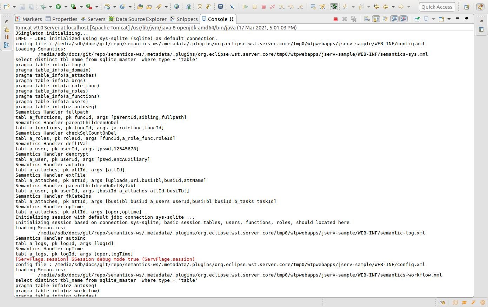
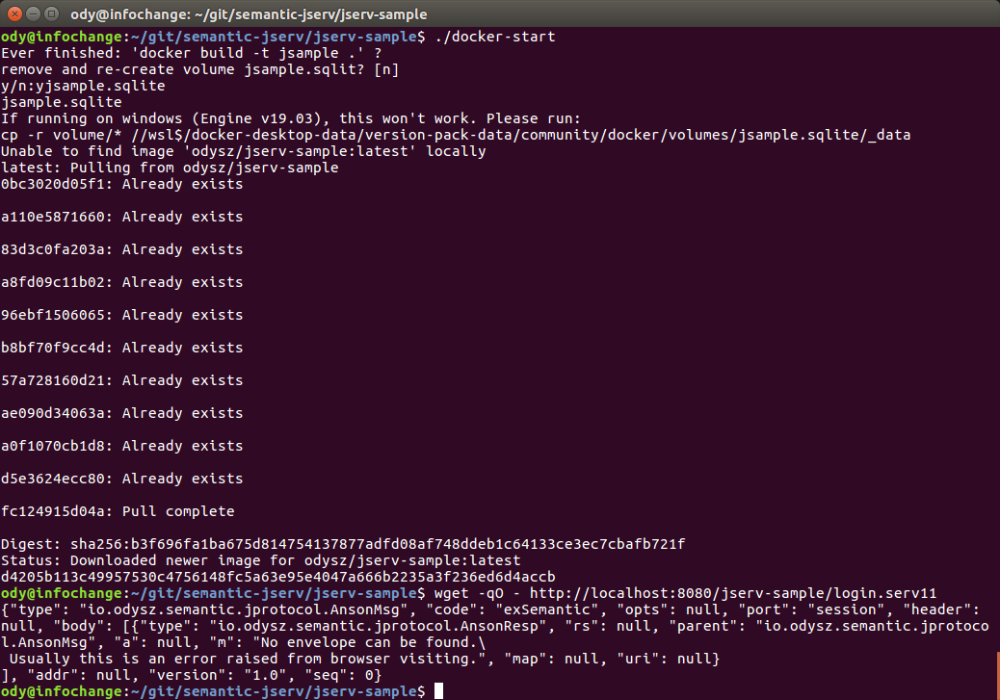

About jserv-sample
The TSample is an example project showing how to use the semantic-jserv API to access data service, the semantic-jserv.
Before flowing steps in the Anclient’s quick start tutorial, you need to setup the sever. The 2 parts must work together though they can be deployed separately.
TSample is the semantic-* server side sample project, implemented ports like:
menu (menu.serv)
tools
...
Check javadoc: Samport for what TSample can do.
Jserv-sample Quick Start
Start with binary release
1. download the jserv-sample v1.2 from release section.
The zip file is a working sample project source for quick start. Unzip it to the local file system.
import eclipse project
In Eclipse:
File -> Import ... -> Existing Projects into Workspace
Navigate to where the package is extracted.
create a servlet server with a 16 bytes string
Here is a sample contex.xml for Tomcat.
<?xml version="1.0" encoding="UTF-8"?>
<Context>
<WatchedResource>WEB-INF/web.xml</WatchedResource>
<WatchedResource>WEB-INF/tomcat-web.xml</WatchedResource>
<WatchedResource>${catalina.base}/conf/web.xml</WatchedResource>
<Parameter name="io.oz.root-key" value="0123456789ABCDEF" override="false"/>
</Context>
deploy to the servlet container server
The sample project comes with a sqlite3 db file and configured basice semantics. The project and deploy to tomcat with Eclipse, should reporting in console like:
{kind=link}
Visite the login serv port:
http://<server>/<path e.g. jserv-sample>/login.serv11
You will get some json data like this:
{ "type": "io.odysz.semantic.jprotocol.AnsonMsg",
"code": "exSemantic",
"opts": null,
"port": "session",
"header": null,
"vestion": "1.0",
"body": [ { "type": "io.odysz.semantic.jprotocol.AnsonResp",
"rs": null,
"parent": "io.odysz.semantic.jprotocol.AnsonMsg",
"a": null,
"conn": null,
"m": "No envelope is available.",
"map": null
} ],
"seq": 0
}
The service is reporting “No envelope is available” because the request with GET request doesn’t carry correct message. That means it’s running correctly. the next step should be using a client to visit the service.
Attention
Jserv is heavily dependent on CROS data service. To avoid trouble, Configure web.xml with this to allow Cross Origin accessing:
<filter>
<filter-name>CorsFilter</filter-name>
<filter-class>org.apache.catalina.filters.CorsFilter</filter-class>
<init-param>
<param-name>cors.allowed.origins</param-name>
<param-value>*</param-value>
</init-param>
</filter>
<filter-mapping>
<filter-name>CorsFilter</filter-name>
<url-pattern>/*</url-pattern>
</filter-mapping>
Start from source
Clone and Import Eclipse Project
You can clone and import the project from here: semantic-jserv repository.
The repository contains 2 Eclipse projects, the semantic-jserv server library and the sample web application’s sample project, jserv-sample, showing how to use the library.
Just import the sample project located in the folder “jserv-sample”.
Check JDBC Connections
TSample using a sqlite3 db file as the default datasource for test. The provided project has some ready to run configurations.
For the first time beginner, there is nothing to do here. More datasource configuration based on JDBC (both connection pool and driver manager mode) can be found in semantic-DA documents.
It’s recommended have a look at the JDBC connection file, located in:
src/main/webapp/WEB-INF/connects.xml
Update Maven Dependencies
Right click the imported project, then “Maven -> Update Project…”.
Wait until for the project is refreshed. Now the project should be ready to be deployed.
Deploy the Web Application
In this step, you need to check the url path, which will be used to configure the client. The tomcat server.xml in Eclipse’s server configuration section may look like this:
<Server>
<Service>
<Engine>
...
<Host appBase="webapps" autoDeploy="true" name="localhost" unpackWARs="true">
<Context docBase="jserv-sample" path="/jsample" reloadable="true"
source="org.eclipse.jst.jee.server:jserv-sample"/>
</Host>
</Engine>
</Service>
</Server>
If everything goes ok, the console should showing message like this:
JSingleton initializing...
INFO - JDBC initialized using inet (mysql) as default connection.
config file : .../.metadata/.plugins/org.eclipse.wst.server.core/tmp1/wtpwebapps/jserv-sample/WEB-INF/config.xml
Loading Semantics:
.../.metadata/.plugins/org.eclipse.wst.server.core/tmp1/wtpwebapps/jserv-sample/WEB-INF/semantics.xml
show tables
show columns from a_attaches
show columns from ...
Note: while handling requests, you may find some error message in console like:
line 1:19 mismatched input '<EOF>' expecting '.'
That’s because of a warning message from antlr4 upon which semansss-* are heavily based. Till now we find its is safe to ignore it.
Now, using a browser visiting e.g.:
http://localhost:8080/jserv-sample/login.serv11
and should get some error messages like above.
That’s all! The jserv-sample service is running now. Next you should visit the service using one of the different versions of Anclient. See the js client sample quick start and the java client (TODO doc).
Test with Docker
Warning
Only tested on Ubuntu.
Since jserv-sample v1.3.2, a scripts for starting docker image is provided here.
Download docker-start & volume.zip. In the folder where volume.zip is extracted, run docker-start, which will setup volume for sqlite3 DB files and bring up docker container. You can run docker command to check the service.
docker ps
CONTAINER ID IMAGE COMMAND CREATED STATUS PORTS NAMES
d4205b113c49 odysz/jserv-sample "catalina.sh run" 15 minutes ago Up 15 minutes 0.0.0.0:8080->8080/tcp, :::8080->8080/tcp jsample
Then use wget to check session port.
wget -qO - http://localhost:8080/jserv-sample/login.serv11
The result is explained here.
{kind=link}